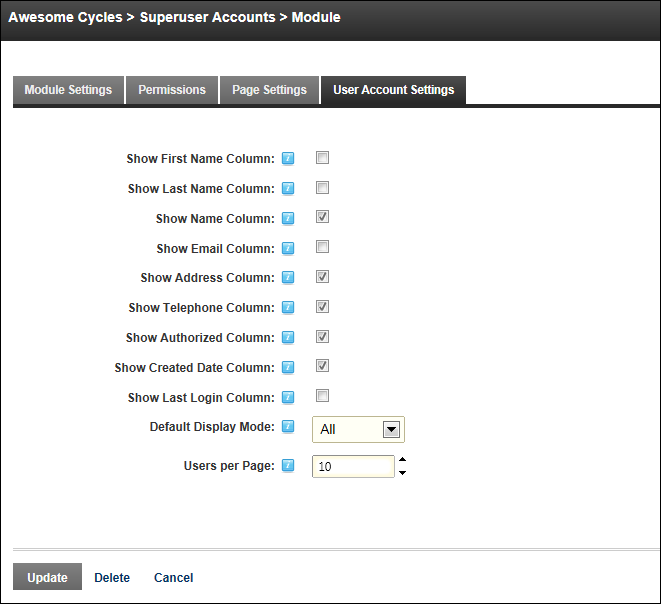

Configuring SuperUser Account Settings
How to select the default layout of the SuperUser Accounts module and the user information that is displayed on the SuperUser Accounts module. The Username, Display Name, Address, Telephone, Created Date and Authorized columns are displayed on this module by default. Additional user information that can be displayed on the SuperUser Accounts module are the First Name, Last Name, Email and Last Login columns.
- Navigation to Host > SuperUser Accounts.
-
- Select the User Accounts Settings tab.
- Optional. Check the check box beside each field to be displayed on the SuperUser Accounts module.
- Show First Name Column. This column is hidden by default.
- Show Last Name Column. This column is hidden by default.
- Show Name Column. This column is visible by default.
- Show Email Column. This column is hidden by default.
- Show Address Column. This column is displayed by default.
- Show Telephone Column. This column is visible by default.
- Show Authorized Column. This column is visible by default.
- Show Created Date Column. This column is visible by default.
- Show Last Login Column. This column is hidden by default.
- At Default Display Mode, set the records that are displayed on the User Accounts page:
- All: Select to display all user accounts on the User Accounts module. Records are displayed in alpha-numerical order. E.g. 1,2,3,a,b,c.
- First Letter: All user accounts for the first letter of the alphabet are displayed.
- None: Select to hide all user accounts on the User Accounts module.
- At Users per Page, click the Up and Down icons to set the number of records that are displayed on each page of the SuperUser Accounts module. The default setting is 10 records.
-
Click the Update button.
